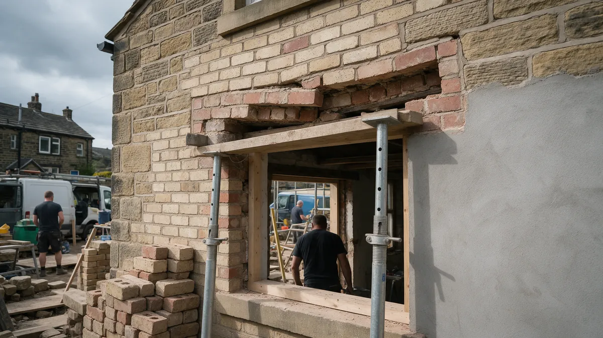

Urgent help
Ring us and we will tell you straight.
Some jobs will not wait and some only look like they will not. Tell us what has happened and we will say honestly which one it is. We do not promise you a time before we know what we are coming to.
A demo number from the range Ofcom keeps for television and film. It rings nobody.

Generated photoThe two we get called out to
What urgent usually means
Make safe after storm or vehicle damage
A boundary wall pushed over, a gate pier clipped by a car, coping off the top of a wall, or stone loose after a gale. The first job is making the area safe and taking down whatever is going to come down anyway. Rebuilding comes after, in daylight, with the right materials.
Propping a failed lintel
A dropped lintel over a window or a door shows as a stepped crack, a window that will not open, or brickwork sagging over the opening. It gets propped and needled first so nothing moves further, then the lintel is replaced and the brickwork rebuilt once it is held.
Before we get there
Keep yourself out of it
Do
- Get everyone well away from anything loose or leaning.
- Block the way in if it is over a path, a drive or the road.
- Ring 999 if anyone is hurt, you can smell gas, or cables are damaged.
- Tell the insurer early if a vehicle or a storm caused it.
- Take a few photos from a safe distance, for us and for them.
Do not
- Do not prop it yourself with whatever is in the garage.
- Do not pull bricks or stone out to see how bad it is.
- Do not park under it or stand things against it.
- Do not let anyone start rebuilding before it is held.
- Do not clear the debris away before the insurer has seen it.
Questions
What people ask when they ring
How quickly can you come?
It depends what is happening that day and what you have got. That is why we ask you to ring rather than fill a form in: we would rather tell you honestly when we can be there than put a number on a web page and miss it.
Is a crack over a window always urgent?
No. Plenty of cracks are old and settled and have not moved in years. A crack that is new, stepped, or opening up is a different matter, and so is a window that has started sticking. Send a photo and we will tell you which it looks like.
Will you just make it safe and go?
If that is what it needs, yes. Making safe and rebuilding are two different jobs and they do not have to happen on the same day. We will tell you what is holding and what is temporary.
Do you deal with the insurer?
We will give you a written description of the damage and what the work involves, which is normally what they want. The claim itself stays between you and them.
Not sure if it is urgent?
Ring and describe it. If it can wait until next week we will tell you that, and book you in properly.